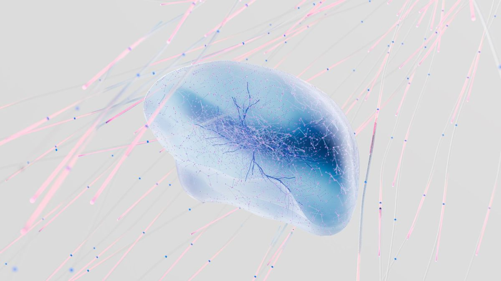

直连门店画面
总部运营智能体直连门店读帧，不依赖店长先反馈。
问题 / 01
门店越多，靠人巡店越像在有限时间里寻找有限片段。总部看到的不是门店全貌，而是被安排过的观察。
200+ 门店靠人巡店，看到的是抽样，异常发现永远滞后。
陈列变化、客流聚集、设备状态异常，往往要等店长反馈、区域汇总或下一次巡店才进入总部视野。信息在层层转述中变慢，处置窗口也跟着变窄。
读帧监控改变输入方式：总部直接读取门店画面，让“正在发生什么”先于“谁有空去反馈”。
识别画面中的陈列偏移、缺位或其他可见变化。
发现聚集、拥堵等需要运营人员确认的现场信号。
把画面中呈现的设备异常转成可跟进的提醒。

怎么做 / 02
链路从总部发起。系统读取门店画面、识别异常，再把需要人判断的事项送进当天工作流。
总部运营智能体直连门店读帧，不依赖店长先反馈。
围绕任务读取连续画面，而不是等待一次人工截屏。
聚焦陈列、客流与设备状态，输出可确认的异常信号。
陈列 · 客流 · 设备异常进入当日待办，交给对应负责人接手判断与处置。


真实场景 / 03
总部按既有节奏发起门店画面巡检。识别结果不再停留在报表里，而是带着门店、异常类型和待确认信息进入当天待办。
界面示意 · 非真实门店数据
门店 A · 陈列偏移
门店 B · 客流聚集
门店 C · 设备状态异常
能力边界 / 04
读帧监控把异常带到人面前，而不是替人完成处置。隐私要求以公司制度为约束条件。
系统负责从画面中发现值得注意的变化，并把信息送到对应工作流。
是否处理、如何处理、何时关闭，由负责人根据现场情况判断。
涉及门店画面的采集、访问与使用，以公司既有制度为约束条件。